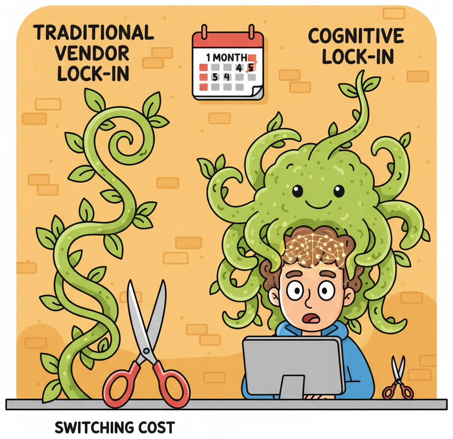
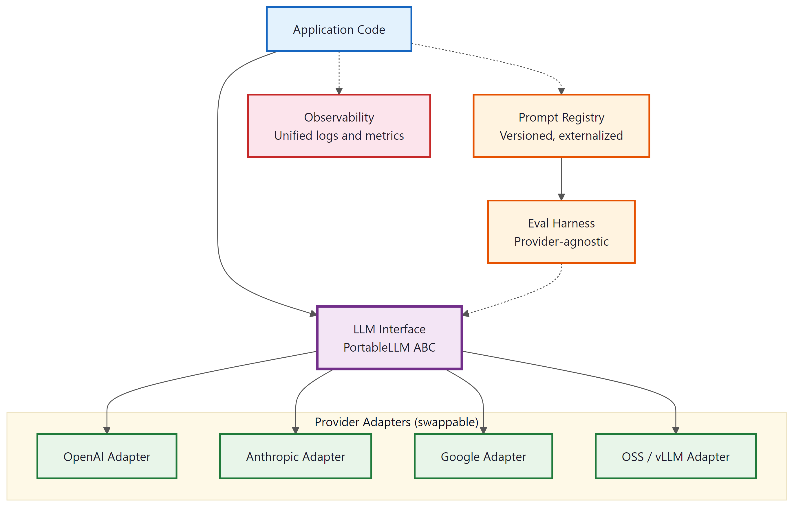

"The most dangerous lock-in is not in your contract. It is in your team's muscle memory."
Compass, Vendor Wary AI Agent
Lock-in in the LLM era is fundamentally different from traditional vendor lock-in. When your product depends on a cloud database, lock-in comes from proprietary query languages, data formats, and migration friction. When your product depends on an LLM, the technical switching cost is surprisingly low (most providers accept nearly identical REST payloads), but the cognitive switching cost is high. Your team learns one provider's quirks, optimizes prompts for one model's personality, and builds institutional knowledge around one set of failure modes. This section explores why cognitive lock-in matters more than contract lock-in, how to plan for AI continuity, and how to architect your system so that switching providers is a configuration change rather than a rewrite.
Prerequisites
This section assumes familiarity with LLM APIs (Chapter 11), including request/response formats and authentication patterns. Understanding of evaluation pipelines (Chapter 28) will help you appreciate the portability checklist at the end. The AI strategy discussion in Chapter 31 provides useful background on build-vs-buy decisions that intersect with provider selection.
35.3.1 Vendor Lock-in vs. Cognitive Lock-in
The traditional cloud computing playbook warns against vendor lock-in: proprietary APIs, non-standard data formats, egress fees, and contractual traps that make migration expensive. These concerns apply to LLM providers too, but they are not the primary risk. The primary risk is something subtler.
Switching LLM providers is technically easy but cognitively expensive. Your team has spent months learning one model's quirks: which prompts produce reliable structured output, where it hallucinates, how it handles edge cases in your domain. That institutional knowledge is not transferable. When you switch providers, you restart the learning curve. The most effective lock-in mitigation is not abstraction layers (though those help); it is a comprehensive evaluation suite that lets you test any new provider against your quality bar in hours, not weeks.
35.3.1.1 What Traditional Lock-in Looks Like
In conventional cloud infrastructure, lock-in manifests through concrete technical barriers. Your application uses a proprietary database query language that no other provider supports. Your data sits behind egress fees that make extraction prohibitively expensive. Your deployment scripts assume a specific orchestration system. Each of these barriers adds measurable switching cost, and the total cost grows linearly with the depth of integration.
35.3.1.2 Cognitive Lock-in: The Hidden Dependency
With LLM providers, the technical barriers are relatively thin. Most providers offer OpenAI-compatible endpoints, accept similar JSON payloads, and return responses in nearly identical formats. The real lock-in is cognitive: it lives in your team's habits, mental models, and accumulated intuitions about how a specific model behaves.
Consider what happens when a team spends six months building a product on GPT-4o. They learn that GPT-4o responds well to a particular system prompt structure. They discover that it handles ambiguous user inputs in a specific way. They develop intuitions about when to set temperature to 0.0 versus 0.7. They accumulate a library of prompt patterns that exploit GPT-4o's strengths and work around its weaknesses. None of this knowledge transfers cleanly to Claude, Gemini, or Llama.
| Dimension | Traditional Vendor Lock-in | Cognitive Lock-in (LLM) |
|---|---|---|
| Primary barrier | Proprietary APIs, data formats, egress fees | Team habits, prompt patterns, model-specific intuitions |
| Switching cost type | Engineering time to rewrite integrations | Relearning model behaviour; re-tuning prompts; re-running evaluations |
| Visibility | Measurable (lines of code, data volume, contract terms) | Invisible until you attempt a switch |
| Growth rate | Linear with integration depth | Exponential with team experience on one provider |
| Mitigation | Standard APIs, open formats, multi-cloud architecture | Provider-agnostic evaluation suites, prompt externalization, regular cross-provider testing |

Cognitive lock-in grows exponentially, not linearly. Every week your team spends on a single provider deepens their model-specific intuitions. After three months, switching feels easy on paper (the API call is nearly identical) but terrifying in practice (every prompt needs re-testing, every edge case needs re-discovery, every quality threshold needs re-calibration). The antidote is not to avoid commitment; it is to invest in provider-agnostic evaluation infrastructure so you can measure what a switch would actually cost. We cover this in the portability checklist in Section 6.
35.3.2 AI Continuity Planning
Business continuity planning is standard practice for databases, payment processors, and cloud infrastructure. Surprisingly few teams apply the same discipline to their LLM dependencies, even though the risks are at least as severe. Your LLM provider can change pricing overnight, deprecate the model version you depend on, suffer an extended outage, or alter model behaviour through a silent update.
35.3.2.1 The Five Continuity Risks
Every AI product that depends on an external model provider faces five categories of continuity risk. Understanding these risks is the first step toward mitigating them.
- Pricing shocks. Your provider doubles the per-token cost. This has happened multiple times in the industry. If your unit economics depend on a specific price point, a sudden increase can make your product unprofitable overnight. The AI unit economics framework from Section 35.1 should include sensitivity analysis for a 2x and 5x cost increase.
- Model deprecation. The specific model version you have optimized your prompts for reaches end-of-life. The replacement model may behave differently, breaking prompts that passed your eval suite. OpenAI deprecated the original GPT-4 in favour of GPT-4 Turbo, then GPT-4o, each time changing behaviour in subtle ways.
- Extended outage. Your provider experiences a multi-hour or multi-day outage. If your product has no fallback, your users experience a complete service failure. This is not hypothetical; every major LLM provider has experienced significant outages.
- Behavioural drift. The provider updates model weights, safety filters, or post-processing logic without formal version change. Your prompts produce different outputs. Your eval scores drop. Section 35.4 covers drift detection; here we focus on the continuity planning response.
- Terms of service changes. The provider changes its acceptable use policy, data retention practices, or training data policies in ways that conflict with your compliance requirements or your customers' expectations.
35.3.2.2 The AI Continuity Plan Template
A minimal AI continuity plan answers four questions for each risk category: What is the trigger? What is the immediate response? What is the fallback? What is the recovery timeline?
| Risk | Trigger | Immediate Response | Fallback | Recovery Target |
|---|---|---|---|---|
| Pricing shock | Cost per request exceeds 2x baseline | Activate cost circuit breaker; enable aggressive caching | Route to secondary provider or smaller model | 48 hours to re-evaluate unit economics |
| Model deprecation | Deprecation notice from provider | Pin current version; begin eval suite runs on replacement | Migrate prompts to next-best model (pre-tested quarterly) | 2 weeks for prompt re-optimization |
| Extended outage | Provider API returns errors for >5 minutes | Automatic failover to secondary provider | Degrade gracefully (cached responses, rule-based fallback) | Seconds (automated) to minutes (manual review) |
| Behavioural drift | Eval scores drop >5% on stable test set | Alert on-call engineer; freeze deployments | Roll back to pinned model version or switch provider | Hours to days depending on severity |
| ToS change | Provider policy update email | Legal review within 48 hours | Migrate to compliant provider (pre-validated quarterly) | 2 to 4 weeks for full migration |
Who: A platform engineering lead at a Series B fintech company running all LLM traffic through a single provider.
Situation: The team had built a provider abstraction layer and a secondary provider integration six months earlier, but nobody had tested the failover path since the initial setup.
Problem: When the primary provider experienced a 90-minute outage, the failover silently failed because the secondary provider's API had changed its authentication scheme. Customers saw errors for the full duration of the outage.
Decision: The lead instituted a quarterly "provider fire drill": on a designated day each quarter, the team routes 5% of production traffic to the secondary provider and compares quality scores against the primary.
Result: The first drill after the policy change caught two integration issues (a deprecated parameter and a response format change). Subsequent drills have run cleanly, and the team now has quarterly data points showing how prompts perform across providers. The cost is minimal (5% of one day's traffic), and the next provider outage triggered a seamless failover.
Lesson: Failover infrastructure that is never tested is failover infrastructure that does not work; schedule regular drills to keep secondary integrations alive.
35.3.3 Translation Cost Collapse: Why Traditional Lock-in Is Fading
Here is a counterintuitive development: LLMs themselves are dissolving the technical barriers that create traditional vendor lock-in. The very technology that creates cognitive lock-in is simultaneously destroying API-level lock-in.
35.3.3.1 LLMs as Universal Translators
Consider what it takes to switch between LLM providers at the API level. You need to translate your request format (usually minor JSON differences), adapt your prompt structure (system/user/assistant role mappings), and normalize the response format (extracting the generated text from slightly different JSON paths). In the pre-LLM era, this kind of format translation was tedious, error-prone, and expensive. Today, you can literally ask an LLM to do the translation for you.
More importantly, the industry is converging on a de facto standard. The OpenAI chat completions API format has become the lingua franca that nearly every provider supports, either natively or through compatibility layers. Anthropic, Google, Mistral, and most open-weight model serving frameworks (vLLM, Ollama, LiteLLM) all offer OpenAI-compatible endpoints. This convergence is not accidental; it is a natural consequence of network effects in developer ecosystems.
35.3.3.2 What Switching Actually Costs Today
Given this convergence, the technical switching cost between providers has collapsed to near zero for the API call itself. What remains are three non-trivial costs:
- Prompt re-optimization. Different models respond differently to the same prompt. A prompt that scores 94% on GPT-4o might score 82% on Claude Sonnet. The gap is not because one model is "worse"; it is because each model has different strengths, different instruction-following patterns, and different default behaviours. Re-optimizing prompts typically requires 1 to 3 days of focused effort per critical prompt.
- Evaluation re-baselining. Your eval thresholds were calibrated for one model's output distribution. A new model will produce outputs with different characteristics, even when the quality is equivalent. You need to re-run your full eval suite (Chapter 28) and potentially adjust scoring rubrics.
- Edge case rediscovery. Over months of production use, your team discovers specific input patterns that cause problems and adds guardrails to handle them. A new model may fail on entirely different inputs, requiring a new round of edge case discovery and mitigation.
In 2024, an engineer at a mid-sized startup reported that switching their entire product from GPT-4 to Claude 3.5 Sonnet took less than two hours for the API integration (literally changing one URL and one model name in their LiteLLM config) but three weeks for prompt re-optimization and evaluation re-baselining. The ratio of integration effort to optimization effort was approximately 1:80. This perfectly illustrates why cognitive lock-in dominates technical lock-in in the LLM era.
35.3.4 The Portable Monogamy Strategy
Given the realities above, the optimal strategy for most teams is what we call "portable monogamy": commit deeply to one provider for speed of execution, but architect your system so that switching providers is a configuration change rather than a rewrite. This approach gives you the best of both worlds: the depth of optimization that comes from mastering one model, and the optionality that comes from clean abstraction boundaries.

35.3.4.1 Why Full Commitment Beats Premature Multi-Provider
Teams that try to support multiple providers from day one often end up with a lowest-common-denominator integration. They avoid using provider-specific features (function calling syntax, structured output modes, extended context windows) because those features differ across providers. The result is a product that uses no provider well, optimized for portability at the expense of capability.
Portable monogamy avoids this trap. You commit fully to your primary provider, exploit their unique capabilities, and optimize your prompts specifically for their model. But you do this through an abstraction layer that isolates provider-specific logic behind clean interfaces. When you need to switch (or when you want to add a second provider for specific tasks), you implement a new adapter rather than rewriting your application.
35.3.4.2 The Abstraction Layer Pattern
The core of the portable monogamy strategy is a provider abstraction layer. This is not a heavyweight framework; it is a thin interface that separates your application logic from provider-specific API details. The following implementation demonstrates the pattern.
"""Provider abstraction layer for LLM-powered applications.
Supports multiple providers behind a unified interface while allowing
provider-specific optimizations through adapter classes.
"""
from __future__ import annotations
import json
import os
import time
from abc import ABC, abstractmethod
from dataclasses import dataclass, field
from pathlib import Path
from typing import Any
@dataclass
class LLMRequest:
"""Provider-agnostic request format."""
system_prompt: str
user_message: str
model: str | None = None # Override default model
temperature: float = 0.7
max_tokens: int = 1024
response_format: dict | None = None # JSON schema if needed
tools: list[dict] | None = None # Function calling definitions
metadata: dict = field(default_factory=dict) # For logging, tracing
@dataclass
class LLMResponse:
"""Provider-agnostic response format."""
content: str
model: str
provider: str
usage: dict # {"prompt_tokens": N, "completion_tokens": N}
latency_ms: float
raw_response: Any # Original provider response for debugging
tool_calls: list[dict] | None = None
class LLMProvider(ABC):
"""Abstract base class for LLM provider adapters."""
@abstractmethod
def complete(self, request: LLMRequest) -> LLMResponse:
"""Send a completion request and return a normalized response."""
...
@abstractmethod
def health_check(self) -> bool:
"""Return True if the provider is reachable and responding."""
...
class OpenAIProvider(LLMProvider):
"""Adapter for OpenAI and OpenAI-compatible endpoints."""
def __init__(self, model: str = "gpt-4o", base_url: str | None = None):
import openai
self.model = model
self.client = openai.OpenAI(base_url=base_url) if base_url else openai.OpenAI()
def complete(self, request: LLMRequest) -> LLMResponse:
model = request.model or self.model
start = time.perf_counter()
kwargs: dict[str, Any] = {
"model": model,
"messages": [
{"role": "system", "content": request.system_prompt},
{"role": "user", "content": request.user_message},
],
"temperature": request.temperature,
"max_tokens": request.max_tokens,
}
if request.response_format:
kwargs["response_format"] = request.response_format
if request.tools:
kwargs["tools"] = request.tools
resp = self.client.chat.completions.create(**kwargs)
elapsed = (time.perf_counter() - start) * 1000
return LLMResponse(
content=resp.choices[0].message.content or "",
model=resp.model,
provider="openai",
usage={
"prompt_tokens": resp.usage.prompt_tokens,
"completion_tokens": resp.usage.completion_tokens,
},
latency_ms=elapsed,
raw_response=resp,
tool_calls=self._extract_tool_calls(resp),
)
def health_check(self) -> bool:
try:
self.client.models.list()
return True
except Exception:
return False
@staticmethod
def _extract_tool_calls(resp) -> list[dict] | None:
msg = resp.choices[0].message
if not msg.tool_calls:
return None
return [
{"name": tc.function.name, "arguments": json.loads(tc.function.arguments)}
for tc in msg.tool_calls
]
class AnthropicProvider(LLMProvider):
"""Adapter for the Anthropic Messages API."""
def __init__(self, model: str = "claude-sonnet-4-20250514"):
import anthropic
self.model = model
self.client = anthropic.Anthropic()
def complete(self, request: LLMRequest) -> LLMResponse:
model = request.model or self.model
start = time.perf_counter()
kwargs: dict[str, Any] = {
"model": model,
"system": request.system_prompt,
"messages": [{"role": "user", "content": request.user_message}],
"temperature": request.temperature,
"max_tokens": request.max_tokens,
}
if request.tools:
kwargs["tools"] = self._convert_tools(request.tools)
resp = self.client.messages.create(**kwargs)
elapsed = (time.perf_counter() - start) * 1000
content = ""
tool_calls = []
for block in resp.content:
if block.type == "text":
content += block.text
elif block.type == "tool_use":
tool_calls.append({"name": block.name, "arguments": block.input})
return LLMResponse(
content=content,
model=resp.model,
provider="anthropic",
usage={
"prompt_tokens": resp.usage.input_tokens,
"completion_tokens": resp.usage.output_tokens,
},
latency_ms=elapsed,
raw_response=resp,
tool_calls=tool_calls if tool_calls else None,
)
def health_check(self) -> bool:
try:
self.client.messages.create(
model=self.model, max_tokens=10,
messages=[{"role": "user", "content": "ping"}],
)
return True
except Exception:
return False
@staticmethod
def _convert_tools(openai_tools: list[dict]) -> list[dict]:
"""Convert OpenAI-format tool definitions to Anthropic format."""
return [
{
"name": t["function"]["name"],
"description": t["function"].get("description", ""),
"input_schema": t["function"]["parameters"],
}
for t in openai_tools
]LLMRequest and LLMResponse dataclasses define a provider-agnostic contract. Each adapter translates between this contract and the provider's native API. Adding a new provider (Google Gemini, Mistral, a local Ollama instance) requires only a new adapter class; no application code changes.35.3.4.3 Prompt Externalization
The second pillar of portable monogamy is prompt externalization: storing your prompts in files outside your application code rather than embedding them as string literals. This practice provides three benefits.
- Version control. Prompts evolve independently of application logic. Storing them in separate files gives you a clean git history of prompt changes, making it easy to correlate quality shifts with specific prompt edits.
- Provider-specific variants. You can maintain prompt variants optimized for different models in parallel (e.g.,
classify_intent.openai.txtandclassify_intent.anthropic.txt) and select the right one at runtime based on the active provider. - Non-engineer iteration. Product managers, domain experts, and prompt engineers can edit prompts without touching application code, lowering the barrier to iteration and reducing deployment risk.
"""Prompt loader with provider-specific variant support."""
from pathlib import Path
class PromptStore:
"""Load prompts from external files with optional provider-specific variants.
Directory structure:
prompts/
classify_intent.txt # Default (provider-agnostic)
classify_intent.openai.txt # OpenAI-optimized variant
classify_intent.anthropic.txt # Anthropic-optimized variant
summarize_ticket.txt
"""
def __init__(self, prompts_dir: str = "prompts"):
self.base_dir = Path(prompts_dir)
def load(self, prompt_name: str, provider: str | None = None) -> str:
"""Load a prompt by name, preferring provider-specific variant if available."""
if provider:
variant_path = self.base_dir / f"{prompt_name}.{provider}.txt"
if variant_path.exists():
return variant_path.read_text(encoding="utf-8").strip()
default_path = self.base_dir / f"{prompt_name}.txt"
if default_path.exists():
return default_path.read_text(encoding="utf-8").strip()
raise FileNotFoundError(
f"No prompt found for '{prompt_name}' "
f"(checked provider='{provider}' and default)"
)
# Usage
store = PromptStore("prompts")
system_prompt = store.load("classify_intent", provider="anthropic")
# Returns contents of prompts/classify_intent.anthropic.txt if it exists,
# otherwise falls back to prompts/classify_intent.txt
classify_intent.anthropic.txt. If that file does not exist, it falls back to the default classify_intent.txt. This pattern lets you maintain provider-optimized prompts without polluting your application logic with conditional branches.35.3.5 Multi-Provider Routing
Once you have a clean abstraction layer, you can move beyond single-provider architecture to multi-provider routing: sending different requests to different models based on the characteristics of each request. This is not about redundancy (though it enables that too); it is about matching each task to the most cost-effective model that can handle it.
35.3.5.1 Why Route to Multiple Providers?
Not all LLM requests are equal. A simple classification task ("Is this email spam?") does not need a frontier model with a \$15/million-token price tag. A complex legal analysis probably does. Routing lets you allocate your most expensive models to the tasks that genuinely need them and send everything else to cheaper, faster alternatives.
The three dimensions that drive routing decisions are:
- Cost. Frontier models (GPT-4o, Claude Opus, Gemini Ultra) cost 10x to 50x more per token than smaller models (GPT-4o mini, Claude Haiku, Gemini Flash). For high-volume, low-complexity tasks, the cost difference is the dominant factor.
- Latency. Smaller models respond faster. For user-facing interactions where perceived speed matters, routing to a faster model improves the experience even if the quality difference is marginal.
- Capability. Some tasks require specific capabilities: long context windows, strong code generation, multilingual proficiency, or reliable structured output. Different models excel at different tasks, and no single model is best at everything.
35.3.5.2 Implementing a Model Router
A model router examines each incoming request and selects the best provider/model combination based on routing rules. The following implementation shows a rule-based router with automatic fallback.
"""Model router with rule-based routing and automatic fallback."""
from __future__ import annotations
import logging
from dataclasses import dataclass
logger = logging.getLogger(__name__)
@dataclass
class RouteRule:
"""A single routing rule that maps request characteristics to a provider."""
name: str
provider_key: str # Key into the provider registry
model: str # Model to use with this provider
condition: callable # Function(LLMRequest) -> bool
priority: int = 0 # Higher priority rules are checked first
max_tokens_threshold: int | None = None # Skip if request exceeds this
class ModelRouter:
"""Route requests to the optimal provider based on configurable rules.
Supports automatic fallback: if the selected provider fails, the router
tries the next eligible provider in priority order.
"""
def __init__(self, providers: dict[str, LLMProvider]):
self.providers = providers
self.rules: list[RouteRule] = []
self.fallback_key: str | None = None
self.fallback_model: str | None = None
def add_rule(self, rule: RouteRule) -> None:
self.rules.append(rule)
self.rules.sort(key=lambda r: r.priority, reverse=True)
def set_fallback(self, provider_key: str, model: str) -> None:
"""Set the default provider used when no rules match or all fail."""
self.fallback_key = provider_key
self.fallback_model = model
def route(self, request: LLMRequest) -> LLMResponse:
"""Route a request through matching rules with automatic fallback."""
eligible_rules = [r for r in self.rules if r.condition(request)]
# Try each eligible rule in priority order
for rule in eligible_rules:
provider = self.providers.get(rule.provider_key)
if provider is None:
logger.warning("Provider '%s' not found, skipping rule '%s'",
rule.provider_key, rule.name)
continue
try:
request_copy = LLMRequest(
system_prompt=request.system_prompt,
user_message=request.user_message,
model=rule.model,
temperature=request.temperature,
max_tokens=request.max_tokens,
response_format=request.response_format,
tools=request.tools,
metadata={**request.metadata, "route_rule": rule.name},
)
return provider.complete(request_copy)
except Exception as exc:
logger.error("Provider '%s' failed for rule '%s': %s",
rule.provider_key, rule.name, exc)
continue # Fall through to next eligible rule
# All rules exhausted; use fallback
if self.fallback_key and self.fallback_key in self.providers:
logger.info("All rules exhausted, using fallback provider '%s'",
self.fallback_key)
request.model = self.fallback_model
return self.providers[self.fallback_key].complete(request)
raise RuntimeError("No provider available: all rules failed and no fallback set")
# ---- Example configuration ----
def is_simple_classification(req: LLMRequest) -> bool:
"""Heuristic: short prompts requesting a single label are simple tasks."""
return (
len(req.user_message) < 500
and any(kw in req.system_prompt.lower()
for kw in ["classify", "categorize", "label", "yes or no"])
)
def needs_long_context(req: LLMRequest) -> bool:
"""Route long inputs to a model with extended context support."""
return len(req.user_message) > 15_000
def needs_code_generation(req: LLMRequest) -> bool:
"""Detect requests that need strong code generation capabilities."""
return any(kw in req.system_prompt.lower()
for kw in ["write code", "generate code", "implement", "function that"])
# Build the router
router = ModelRouter(providers={
"openai": OpenAIProvider(model="gpt-4o"),
"openai_mini": OpenAIProvider(model="gpt-4o-mini"),
"anthropic": AnthropicProvider(model="claude-sonnet-4-20250514"),
})
# Simple tasks go to the cheapest, fastest model
router.add_rule(RouteRule(
name="simple_to_mini",
provider_key="openai_mini",
model="gpt-4o-mini",
condition=is_simple_classification,
priority=10,
))
# Long-context tasks go to Claude (200K context window)
router.add_rule(RouteRule(
name="long_context_to_claude",
provider_key="anthropic",
model="claude-sonnet-4-20250514",
condition=needs_long_context,
priority=8,
))
# Code generation tasks go to GPT-4o
router.add_rule(RouteRule(
name="code_to_gpt4o",
provider_key="openai",
model="gpt-4o",
condition=needs_code_generation,
priority=5,
))
# Default fallback for everything else
router.set_fallback("openai", "gpt-4o")
# Usage: the application code never mentions a specific provider
response = router.route(LLMRequest(
system_prompt="Classify this customer email as: billing, technical, or general.",
user_message="I was charged twice for my subscription last month.",
))
RouteRule defines a condition function that examines the request and decides whether this rule applies. Rules are evaluated in priority order, and if the selected provider fails, the router automatically tries the next eligible provider. The application code calls router.route() without knowing which provider will handle the request.35.3.5.3 When Multi-Provider Routing Makes Sense
Multi-provider routing adds complexity. It is not always worth it. The decision depends on your scale and the diversity of your workload.
| Scenario | Single Provider | Multi-Provider Routing |
|---|---|---|
| Monthly LLM spend < \$1,000 | Stick with one provider. Optimization effort exceeds savings. | Not worth the complexity overhead. |
| Monthly spend \$1,000 to \$10,000 | Optimize prompts for primary provider; maintain a tested fallback. | Consider routing simple tasks to a cheaper model (often 30% to 50% savings). |
| Monthly spend > \$10,000 | Likely leaving money on the table. | Strong candidate. Route by task complexity to optimize cost per outcome. |
| High availability requirement | Single point of failure risk. | Automatic failover justifies the complexity regardless of cost. |
| Diverse task types | One model handles everything, but some tasks are over-served. | Match model capability to task requirements for better cost/quality tradeoff. |
Who: An ML engineer at a customer support platform processing 100,000 LLM requests per day.
Situation: All requests were routed to GPT-4o at approximately \$5 per 1,000 requests (blended input/output cost), producing a daily LLM bill of \$500.
Problem: Cost analysis revealed that 65% of requests were simple intent classifications (e.g., "Is this a billing question or a shipping question?") that did not require frontier-model reasoning, yet they consumed the same per-request cost as complex multi-turn conversations.
Decision: The engineer implemented task-based routing: a lightweight classifier tagged each request by complexity, sending simple intent classifications to GPT-4o mini (which handled them with equivalent accuracy) and reserving GPT-4o for complex reasoning tasks.
Result: The blended daily cost dropped from \$500 to approximately \$210, saving roughly \$8,700 per month. The routing logic required two days of engineering effort and one day of evaluation validation.
Lesson: Task-based model routing is often the highest-ROI optimization available, delivering large cost reductions with minimal engineering investment.
35.3.6 The Portability Checklist
The strategies described above coalesce into a concrete checklist. Each item is something you can implement today, regardless of whether you plan to switch providers soon. Think of these as insurance premiums: small investments that pay off enormously if you ever need to make a change.
35.3.6.1 Architecture and Code
- Implement a provider abstraction layer. All LLM calls go through a unified interface (like the one in Code Fragment 35.3.1). No provider-specific SDK calls appear in application logic.
- Externalize all prompts. System prompts, few-shot examples, and output format instructions live in files, not in code. Support provider-specific variants (Code Fragment 35.3.2).
- Normalize response schemas. Define your own response dataclasses (like
LLMResponseabove) and map every provider's raw response into this format. Application logic should never parse provider-specific JSON. - Standardize on OpenAI-compatible APIs where possible. For open-weight models and local deployments, use serving frameworks (vLLM, Ollama) that expose OpenAI-compatible endpoints. This reduces the number of adapter implementations you need to maintain.
- Isolate provider-specific features. If you use a capability unique to one provider (e.g., Anthropic's extended thinking, OpenAI's structured outputs mode), wrap it in an adapter method with a graceful degradation path for providers that lack the feature.
35.3.6.2 Evaluation and Testing
- Build a provider-agnostic eval suite. Your evaluation pipeline (Chapter 28) should be able to run against any provider without modification. The eval suite tests your product's quality, not a specific model's behaviour.
- Run cross-provider eval quarterly. Even if you have no plans to switch, run your eval suite against at least one alternative provider every quarter. Track the quality delta over time. If the gap narrows, your switching cost is decreasing.
- Maintain a "switchability score." Define a simple metric: the percentage of your eval cases that pass at an acceptable quality threshold on your secondary provider. A switchability score above 85% means you could switch within days. Below 70% means you have significant re-optimization work ahead.
35.3.6.3 Operations and Process
- Document model-specific knowledge. When your team discovers a model quirk (e.g., "GPT-4o tends to over-apologize in customer service contexts" or "Claude performs better with XML-tagged instructions"), write it down. This institutional knowledge is the substance of cognitive lock-in, and making it explicit reduces its cost.
- Run quarterly provider fire drills. Route a small percentage of traffic to your secondary provider for one day. Verify that your failover logic works, measure quality, and update your continuity plan based on what you learn.
- Monitor provider announcements. Subscribe to status pages, changelog feeds, and deprecation notices from your primary and secondary providers. Build a 90-day advance warning system for model deprecations.
- Negotiate contract flexibility. If you sign a committed-use agreement with a provider, negotiate exit clauses tied to specific performance or pricing triggers. Your continuity plan should include contract terms, not just technical architecture.
If you implement only three items from this checklist, make them: (1) the provider abstraction layer, (2) prompt externalization, and (3) the quarterly cross-provider eval run. These three practices alone reduce your effective switching cost by an estimated 60% to 70%. Everything else provides incremental value but is less critical for most teams at most stages of growth.
35.3.7 Putting It All Together: An Architecture Diagram
The following diagram shows how the components from this section fit into a complete architecture. Your application logic sits at the top, completely unaware of which provider is handling each request. The prompt store supplies externalized prompts. The model router examines each request and selects the best provider/model combination. Each provider adapter translates between the unified interface and the provider's native API. The evaluation pipeline runs against the unified interface, making it inherently provider-agnostic.
| Layer | Responsibility | Provider-Specific? |
|---|---|---|
| Application Logic | Business rules, user interaction, orchestration | No. Calls router.route(request) only. |
| Prompt Store | Load and version prompts; select provider-specific variants | Contains variants, but exposes a provider-agnostic load() method. |
| Model Router | Select optimal provider/model based on request characteristics | Knows about providers but is configured declaratively. |
| Provider Adapters | Translate between unified interface and native APIs | Yes. This is the only layer with provider-specific code. |
| Evaluation Pipeline | Test quality against the unified interface | No. Runs against any provider through the router. |
The key insight in this architecture is that provider-specific knowledge is concentrated in exactly two places: the adapter classes and the prompt variant files. Everything else is provider-agnostic. When you need to add a new provider, you write one adapter class and (optionally) a set of prompt variants. When you need to switch your primary provider, you change the router configuration and run your eval suite. No application logic changes.
35.3.8 Common Anti-Patterns
Teams frequently fall into patterns that make portability harder than it needs to be. Recognizing these anti-patterns early saves significant refactoring later.
- Hardcoded model names in application logic. When model identifiers like
"gpt-4o"appear in business logic files (not in configuration or adapter classes), every model change requires a code change. Extract model names into configuration. - Prompt strings embedded in source code. Inline prompt strings defeat version control, make provider-specific variants impossible, and create merge conflicts when multiple team members iterate on prompts simultaneously. Move prompts to external files.
- Parsing provider-specific response JSON in application code. If your business logic accesses
response.choices[0].message.content(OpenAI format) directly, you have coupled your application to one provider's schema. Use a normalized response dataclass. - Skipping evaluation when switching models. Teams sometimes swap model names and assume everything works because "the new model is supposed to be better." Always run your full eval suite after any model change. Always.
- Building abstraction layers that abstract too much. The opposite extreme: abstracting away capabilities that differ between providers (tool calling, structured output, streaming) behind a lowest-common-denominator interface. Good abstraction preserves access to provider-specific features through optional parameters, not by eliminating them.
- Cognitive lock-in is more dangerous than vendor lock-in. Designing prompts, evaluations, and workflows around one model's quirks creates deeper dependency than API contracts do.
- Translation cost collapse is shrinking switching costs. LLMs can translate prompts, convert data formats, and adapt integrations between providers at a fraction of the manual effort.
- The portable monogamy strategy balances depth and flexibility. Go deep with one provider for speed, but maintain an abstraction layer and periodic multi-provider testing to preserve your exit option.
Exercises
Vendor lock-in is the explicit cost of switching providers. Cognitive lock-in is the implicit cost of having to relearn how to think about a problem. (a) Give a concrete LLM example of each. (b) Why is cognitive lock-in often more expensive than vendor lock-in in practice? (c) What single architectural choice reduces both kinds at once?
Answer Sketch
(a) Vendor lock-in: your prompts encode OpenAI's chat-template and JSON-mode behaviors; switching to Anthropic costs weeks of porting. Cognitive lock-in: your team thinks in terms of "tools the OpenAI Assistants API gives us" and can't immediately picture the same workflow built differently. (b) Cognitive lock-in is invisible until you try to switch and discover the team's mental model doesn't translate. The cost is people, not code. Vendor lock-in is at least bounded by an estimable engineering effort. (c) Architectural choice: build against an internal abstraction layer (your own LLMClient, ToolRegistry, EvalSuite), not directly against the vendor SDK. This forces the team to think in your domain's terms, and any vendor swap is a single-class implementation change.
You have 200 production prompts written for GPT-4. You want to evaluate them on Claude. Predict: (a) how many will work as-is at acceptable quality; (b) how many require small format changes; (c) how many require structural rewrites. What single tool would automate (b)?
Answer Sketch
(a) Roughly 60-80% will work as-is at "close enough" quality (within a few percentage points). Most prompts are not deeply provider-specific. (b) About 15-30% need small format changes: system prompt placement, JSON-mode handling, tool-call schema differences. (c) Structural rewrites: 5-10%, typically prompts that exploit a provider-specific feature (OpenAI's parallel function calling, structured outputs) without an equivalent in the target. The single tool to automate (b): a prompt-translation pass that runs each prompt through the new provider, compares output to the original on your eval set, and flags prompts whose quality drops more than a threshold. This is the "translation cost collapse" that makes multi-provider strategy increasingly viable.
Sketch a 12-line LLMClient abstraction with one method chat(messages, tools, schema) that dispatches to OpenAI, Anthropic, or a self-hosted vLLM endpoint based on a config string. State two pieces of behavior that the abstraction must not hide.
Answer Sketch
class LLMClient:
def __init__(self, provider, model): self.provider, self.model = provider, model
def chat(self, messages, tools=None, schema=None):
if self.provider == "openai": return self._openai(messages, tools, schema)
if self.provider == "anthropic": return self._anthropic(messages, tools, schema)
if self.provider == "vllm": return self._vllm(messages, tools, schema)
def _openai(self, m, t, s): ... # convert tools list to OpenAI schema, call openai.chat
def _anthropic(self, m, t, s): ... # convert tools list to Anthropic schema, call anthropic.messages
def _vllm(self, m, t, s): ... # POST to vLLM /v1/chat/completions
Two behaviors the abstraction must NOT hide: (1) per-token cost (the caller needs visibility for tier routing); (2) raw error class (rate limit vs auth vs server error), so circuit breakers and retries can behave correctly. Hide the schema differences; expose the operational signals.
You ship a multi-provider router. List four failure modes that don't exist with a single-provider deployment, and one mitigation each.
Answer Sketch
(1) Output drift between providers: the same query gets different answers from different providers, breaking caches and confusing users. Mitigation: route deterministically per (user, query-hash) so the same input always hits the same provider. (2) Per-provider quality regression invisible in aggregate: average quality looks fine but provider B is silently worse on a subset. Mitigation: track quality metrics per provider, not just aggregate. (3) Schema-edge incompatibility: provider A handles tool nesting; B truncates it. Mitigation: validate every tool-call schema against every provider in CI. (4) Cost calculation bugs: each provider's billing units differ (image tokens, cached tokens, batch tier). Mitigation: a per-provider price model in code with regression tests on actual invoices. The general lesson: multi-provider buys resilience and price leverage, but adds operational complexity proportional to provider count.
What Comes Next
With your provider strategy in place and your architecture built for portability, Section 35.4: Post-Launch Monitoring and Iteration covers the continuous feedback loops that keep your AI product healthy after launch. You will learn to detect quality drift, design A/B tests for non-deterministic systems, and build the iteration flywheel that separates products that thrive from those that quietly degrade.
- Cognitive lock-in is the real risk. Your team's accumulated intuitions about one model's behaviour are harder to migrate than any API integration. Make this knowledge explicit by documenting model-specific quirks and maintaining provider-agnostic evaluation suites.
- Technical switching costs are collapsing. The convergence on OpenAI-compatible APIs means the API call itself is trivial to port. The residual costs are prompt re-optimization, evaluation re-baselining, and edge case rediscovery.
- Portable monogamy is the winning strategy. Commit deeply to one provider for execution speed, but architect through an abstraction layer so that switching is a configuration change. Avoid premature multi-provider complexity.
- Multi-provider routing is a cost optimization tool. Route simple tasks to cheap models, complex tasks to frontier models, and build automatic fallback for resilience. The break-even point is typically around \$1,000 to \$5,000 in monthly LLM spend.
- The portability checklist has a clear 80/20. A provider abstraction layer, externalized prompts, and quarterly cross-provider evaluation runs deliver the majority of portability value with minimal overhead.
Show Answer
Show Answer
Show Answer
Demonstrates the importance of provider-agnostic evaluation methodology. Directly relevant to the cross-provider eval practices in this section's portability framework. Teams building multi-provider evaluation suites should read this to understand validator calibration challenges.
Provides empirical evidence that model behaviour changes across versions without explicit notice, underscoring the need for AI continuity planning. Essential reading for any team relying on a single provider, as it quantifies the silent drift risk discussed in this section.
Formalizes the model routing problem and evaluates several routing strategies, providing theoretical grounding for the practical router pattern in this section. Researchers and cost-conscious engineering teams will find the break-even analysis especially useful.
Sculley, D., et al. (2015). "Hidden Technical Debt in Machine Learning Systems." NeurIPS 2015.
The seminal paper on ML systems debt, whose warnings about entanglement and hidden dependencies apply directly to the cognitive lock-in patterns described in this section. Required reading for any team building production ML or LLM systems.
Madaan, A., et al. (2023). "Self-Refine: Iterative Refinement with Self-Feedback." NeurIPS 2023.
Demonstrates that LLMs can evaluate and improve their own outputs, a capability that underlies the translation cost collapse argument in this section. Practitioners exploring self-improvement loops and provider migration automation will find the methodology directly applicable.
Vaillant, R. (2024). "LiteLLM: A Unified Interface for 100+ LLM Providers." GitHub.
An open-source implementation of the provider abstraction pattern described in this section, supporting automatic fallback and cost tracking across providers. Teams implementing portable monogamy or multi-provider routing should evaluate this as a starting point for their abstraction layer.